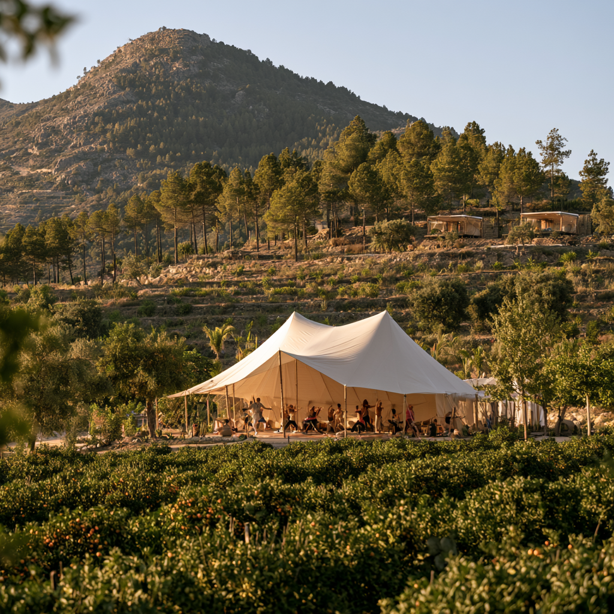

What the hillside could look like · Rendered vision
Finca Tariqa · Carcaixent
The long-term plan for the land beyond the grove. A rural event venue, agro-tourism rooms, glamping on the limestone terraces, and the infrastructure that makes a working farm into a place people return to.
Some of this can start now. Most of it requires a Declaración de Interés Comunitario — the legal instrument that authorises non-agricultural development on rural land in Valencia. Here is what we are planning and when.
A perimeter fence defining the full plot — security, livestock management, and the clear boundary the land needs before anything else is built on it.
Tents, shepherd huts, or small timber structures on the terraced hillside. Demountable structures follow a lighter regulatory path than permanent buildings and can be authorised under Decreto 4/2024 agro-tourism rules.
Four to eight rooms for overnight stays — in the restored farmhouse and new structures. Registered as alojamiento rural under Valencian tourism law. The heart of the accommodation offer.
A covered outdoor event space for up to one hundred people — weddings, private dinners, retreats, cultural events. The limestone hillside as backdrop. Agriculture as the reason the place exists.
A natural or conventional pool — ancillary to the rural accommodation and venue. The specifics depend on what the DIC authorises and the architect's assessment of the hillside water table and drainage.
Vehicle and equipment storage for the farm and the guest operation. Can be partially authorised as an agricultural auxiliary structure before the DIC. The full build follows.
Finca Tariqa is built for the kind of gathering that needs somewhere real — where the setting is not a backdrop but the whole point. The hillside, the limestone, the orange trees, the silence at dusk. These are the venue.
We are building towards a permanent event structure, but the land is already ready. From the first season we will host gatherings under canvas — cacao ceremonies, sound healing, bodywork, ecstatic dance, and retreats that use the grove as the main room.

A Declaración de Interés Comunitario is Valencia's mechanism for authorising non-agricultural activity on protected rural land — suelo no urbanizable. Without one, permanent structures like rooms and a venue cannot be legally built.
It is a two-stage process: the municipality approves first, then the Generalitat Valenciana. Both have to say yes. The application is framed around the farm's agricultural identity and the agro-tourism framework of Decreto 4/2024 — the strongest current justification for this kind of development in Valencia.
Timeline is two to four years from application to authorisation. The fence, glamping, and a basic garage can proceed before the DIC is granted.
Before anything, confirm whether the parcels are classified as suelo no urbanizable común or protegido under Carcaixent's Plan General de Ordenación Urbana. The flood history and DANA designation may affect this. Protegido classification makes the DIC harder.
Not any architect. One who has submitted DICs in the Comunitat Valenciana and knows the Conselleria's current tolerance. They will determine what is packageable, at what scale, and at what cost. Budget €15,000–€30,000 in fees before a building permit is touched.
The application is submitted to Carcaixent town hall with a full project brief, environmental assessment, and justification under Decreto 4/2024. The municipality deliberates and votes.
If the municipality approves, the file goes to the Conselleria de Medi Ambient i Infraestructures at GVA for final authorisation. This is where the project is either confirmed or challenged.
With the DIC in hand, standard building permits are issued by the municipality and construction begins. Tourism licence applications run in parallel for the accommodation and venue.
Before guests can come, before harvest volunteers can sleep on site, there needs to be somewhere for them to stay. Finca Tariqa is a working citrus and reforestation farm — but right now it has no basecamp.
This season, we are building it. Sleeping accommodation for volunteers, a composting toilet block, and a shared working area. We are looking for people who can help build — in exchange for food, time on the land, and the dwelling you build yourself.
You do not need to be a professional. But you need to be serious about the work. This is a real build on a real farm, and what gets constructed will be used by people for years.
You have hands-on experience with construction, natural building, or sanitation systems. You can lead a build, problem-solve on site, and leave behind something that works. We will treat you as a collaborator, not a labourer.
You have never built anything, but you want to. You are physically capable, you will follow instruction, and you are prepared to mix cement, carry stone, and do the unglamorous work that any real build involves. We will teach what we can.
The first structure you build is your own dwelling. You arrive with a tent and leave with something more permanent. That is the job.
Cooked from the grove and the local market in Carcaixent. Spanish farmhouse food. No catering — real meals, eaten together.
Eight thousand square metres of citrus, a limestone hillside under reforestation, and one of the oldest agricultural landscapes in Spain. Yours to explore when the work is done.
Camp Tariqa is a long project and it needs specific people at specific moments. If any of these fit you, get in touch.
Someone with DIC experience in the Comunitat Valenciana. Knows the Conselleria, has submitted successfully, understands what is and is not packageable on suelo no urbanizable in 2026.
People who can build the basecamp, the fence, and eventually the permanent structures. Specialists in timber, earth, lime, dry-stone, and off-grid systems. See the volunteer page for the current call.
This is a 3–5 year development project on agricultural land in Valencia. The return is a working agro-tourism operation, not a quick flip. If you understand rural projects and want to back one early, talk to us.
Someone who can help design the glamping layout, the approach paths, and the relationship between the grove, the terraces, and the built elements. The land is the product — the design has to serve it.
People who know the Spanish wedding, retreat, and private events market and can help position a rural venue in Valencia before it opens. Early relationships shape what a venue becomes.
Follow the project, share it with people who might care, come for the harvest. The community that builds around a project like this is part of what makes it work. No formal role required.
If you can help — or just want to watch it happen.
Write to us with who you are and why this project interests you. We will reply.